Institut de beauté · Namur centre
SAVOSKBEAUTÉ
Des cils et des ongles posés avec minutie, au cœur de Namur.
Extensions et rehaussement de cils, prothésie ongulaire et manucure, du mardi au dimanche, place Maurice Servais.
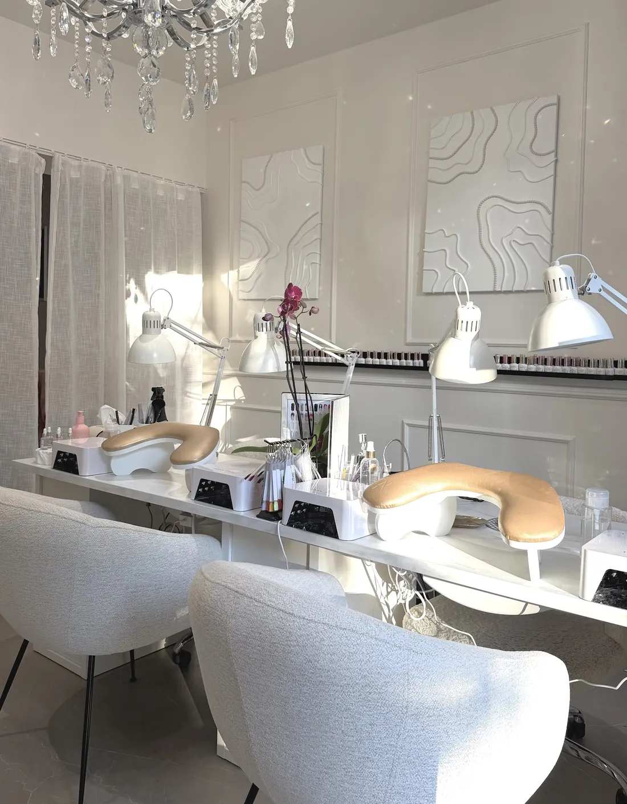
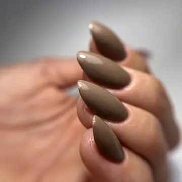
« […] Toujours impeccable, minutieux et très professionnel. […] »
Tahera M. · avis Google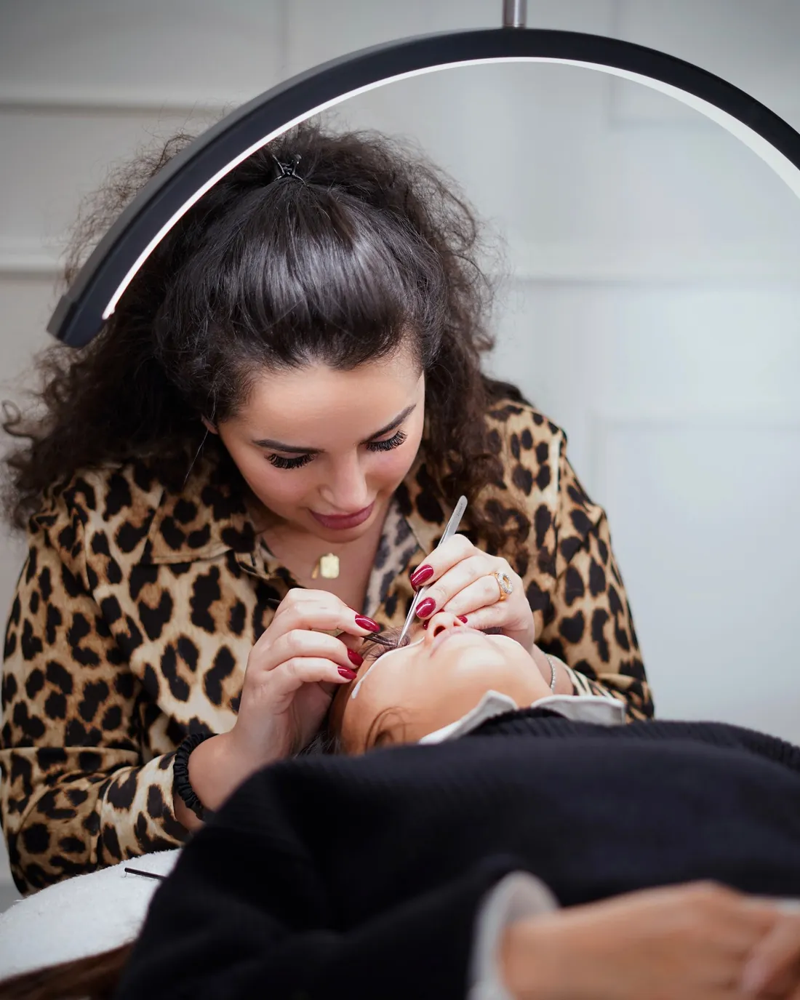
Extensions ou rehaussement : le regard, avant / après.
Deux façons d'ouvrir le regard : des extensions posées une à une, ou un rehaussement de vos cils naturels. Les clientes le disent mieux que nous.
« […] Le rehaussement des cils est incroyable : on voit un véritable avant/après. […] »
Aurelie B. · avis Google, 5 étoiles
« […] Les cils sont magnifiques, le travail est propre et super bien réalisé. […] »
Valentine D. · avis Google, 5 étoiles
Amande, french ou petits cœurs : des mains soignées au millimètre.
Prothésie ongulaire et manucure, par les prothésistes ongulaires de l'équipe. Quelques poses photographiées à l'institut.
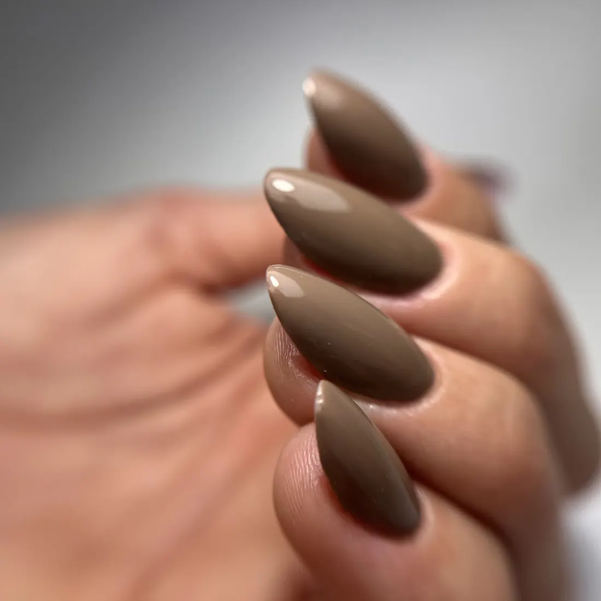
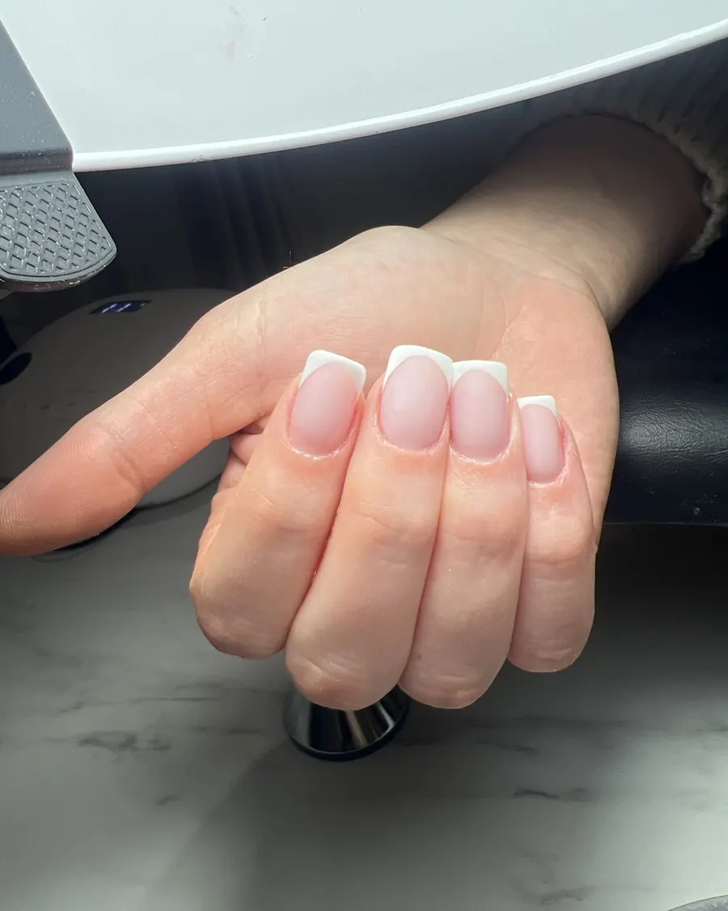
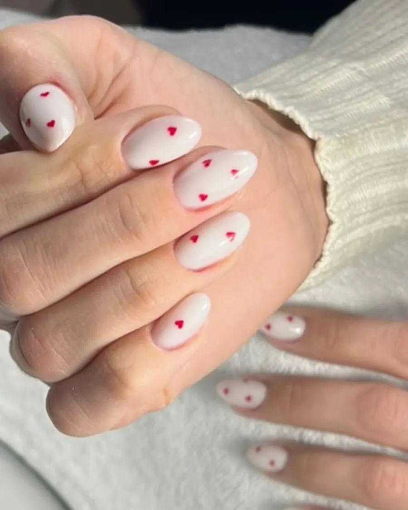
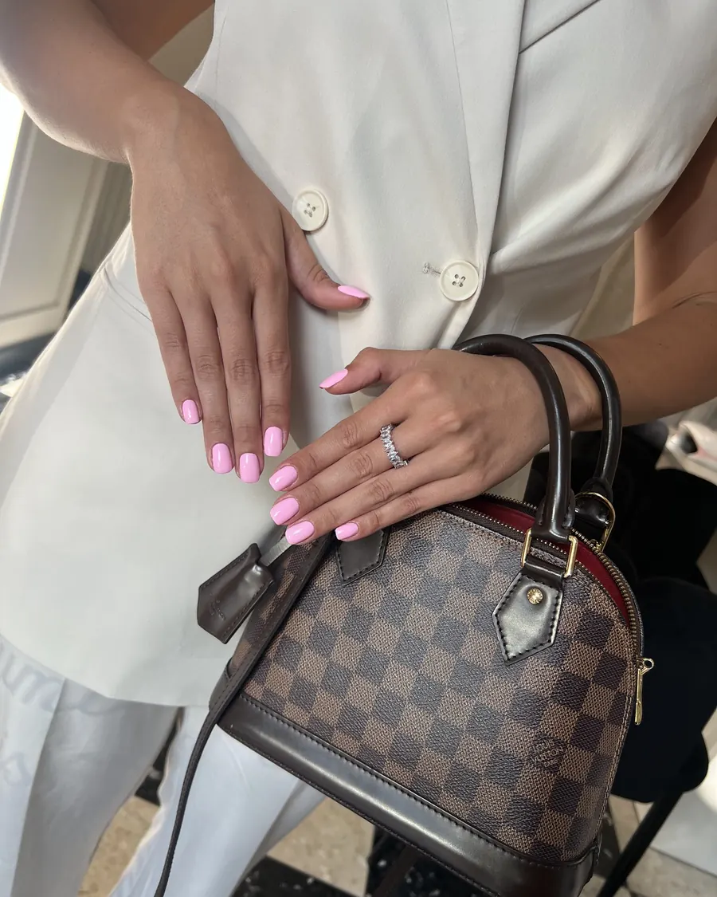
« […] Les prothésistes ongulaire ainsi que la patronne sont également d’une écoute et d’une gentillesse incroyables. […] »
Tahera M. · avis Google, 5 étoilesLustre en cristal, fauteuils bouclette et sol en damier.
Derrière la grande vitrine de la place Maurice Servais, un institut blanc et vieux rose : tables de manucure sous lampes, orchidées, rideaux tombants. On s'y installe et on souffle.
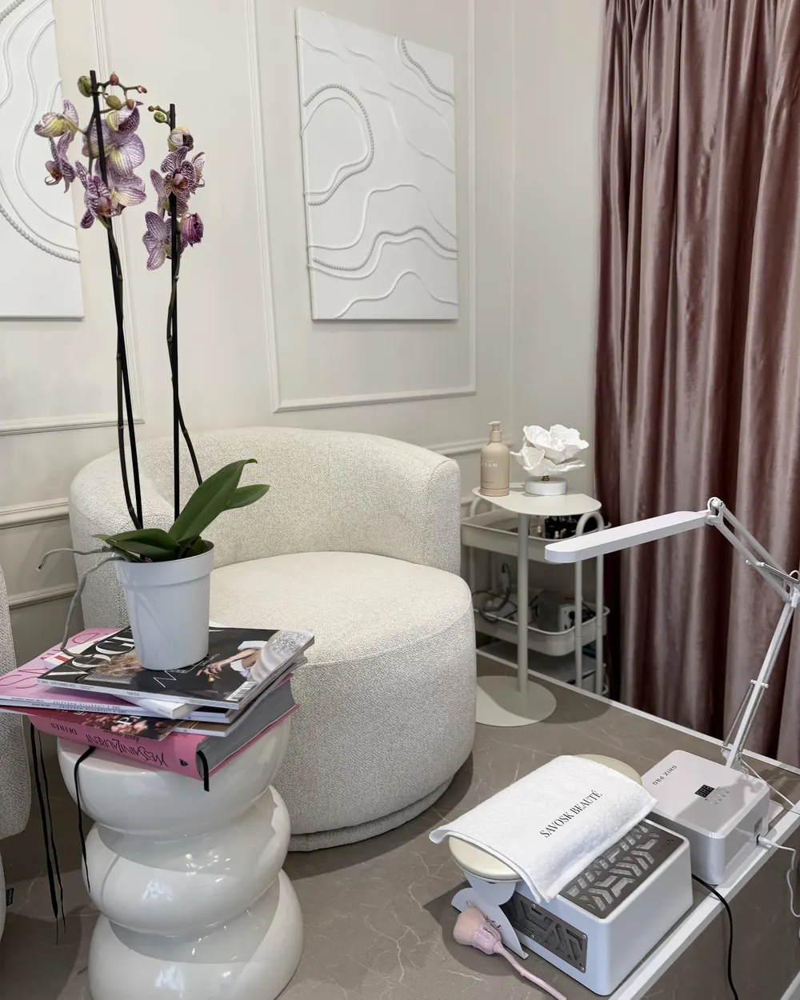
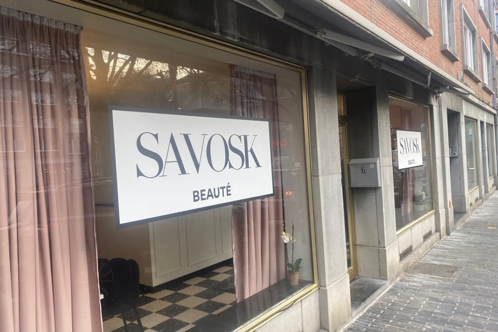
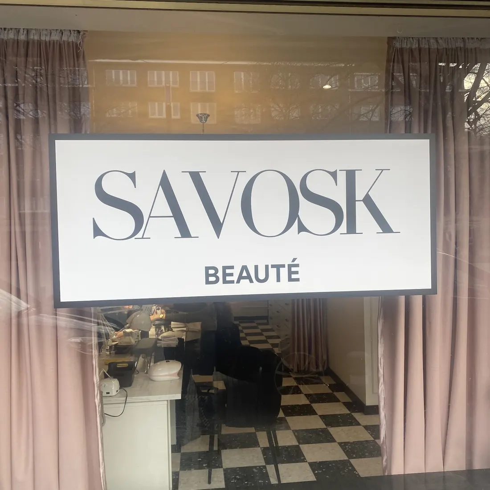
« […] le lieu est très beau, propre, et l’esthéticienne est à l’écoute, accueillante, très professionnelle ! […] »
Céline V. · avis Google, 5 étoiles4,9 sur 5, sur 59 avis Google.
« Je recommande et je reviendrai ! », écrit Céline après ses premières extensions. Ces avis sont repris mot pour mot de la fiche Google de l'institut.
Réservez à toute heure, même le lundi.
Le soin, le jour, l'heure : les créneaux suivent les horaires de l'institut, du mardi au dimanche. Savosk confirme ensuite votre rendez-vous.
Ouvert six jours sur sept, dimanche compris.
Du mardi au dimanche- LundiFermé
- Mardi9 h 30 – 19 h
- Mercredi9 h 30 – 19 h
- Jeudi9 h 30 – 19 h
- Vendredi9 h 30 – 19 h
- Samedi9 h 30 – 19 h
- Dimanche9 h 30 – 15 h
Téléphone
0485 65 33 63Savosk beauté
Place Maurice Servais 7, 5000 Namur
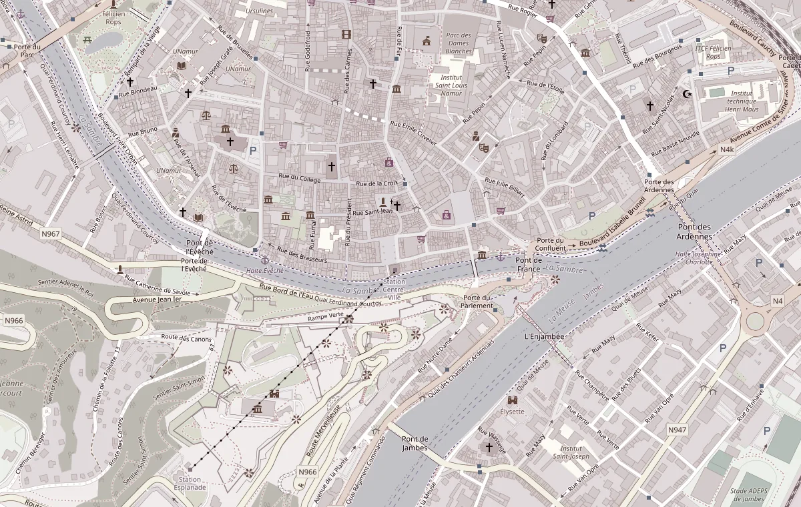
Itinéraire © OpenStreetMap